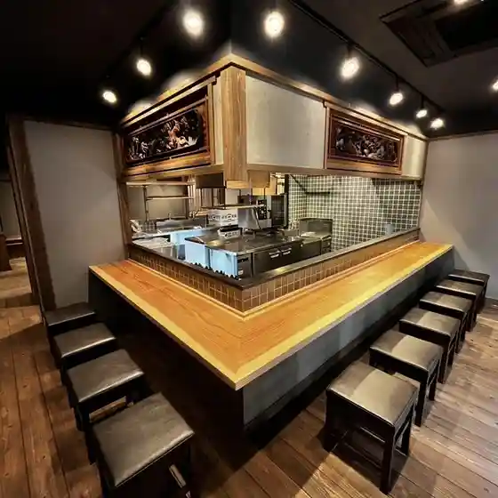
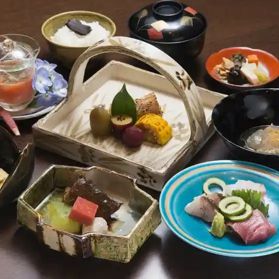
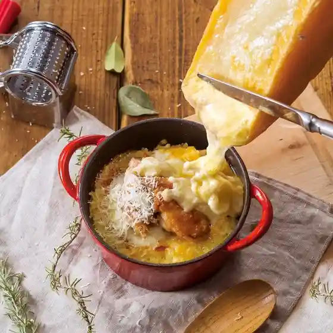
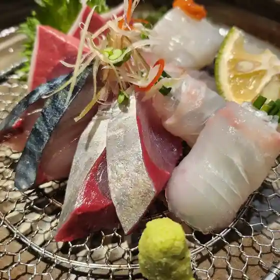
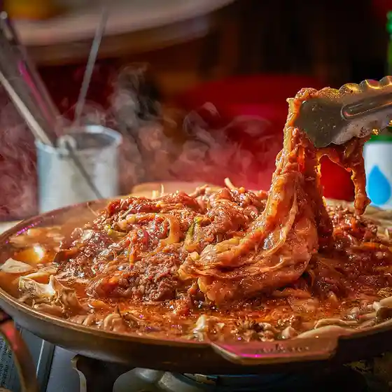
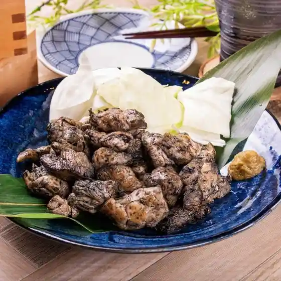
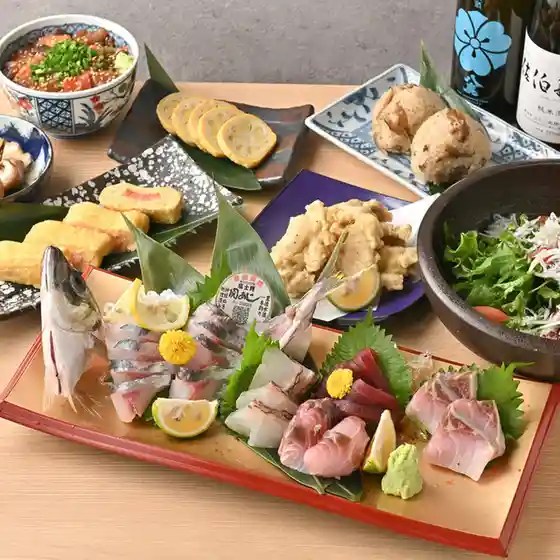
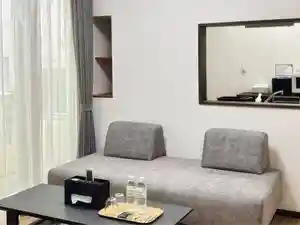

Oita
Oita · Oita
Oita
Highlighted on the Oita map.

Sights
Kan Saki (Sekisaki) Lighthouse

Shiteisupa Tenku

Oita Castle Park Funai Castle Ruins

Takasaki Yama Shizen Zoo
Tsukano Kosen Kyodo Bath

Tanjo Onsen
Higurashi Chaya
Oita Supotsu Park (Kurasasudomu Oita)
Oita Mariinparesu Aquarium (Umitamago)
Oita Prefectural Art Museum (OPAM)
Kanzaki (Kozaki) Beach
Oita Kantorii Club Tsukigata Kosu
Oita Tokyu Gorufu Club
So Kyu Hime Shrine (Hayasuhimejinja)
Hoyo Yosai Hodai Ato
Sachi Seika
Amabe no Sato Kan Aji Kansa Ba Kan
Namban BVNGO Koryu Kan
Gokoku Shrine
Nishi Kan Ta (Sasamuta) Shrine
Ono Kawa Kasenjiki Migigishi no Kosumosu Hatake
Kantan Minato Sono
Wakazuma no Mise
Sankinkotai Doro Ima City Ishidatami Michi
Sano Shokubutsu Park
Taishi Namaki (Ojuki) Beach
Tennen Onsen Ten no Kawa
Heiwa City Tami Park
Hahasohara (Yusuhara) Hachiman Shrine
Hotel Topazu Dai Zai Ekimae Ogyoku Baths
Nanase (Nanase) Kawa Nature Park
Sofikko Land
Shimogori Onsen
Hyakujusai Baths (Nyuguroria Hotel Nai)
Akeno Asahi Onsen
Kurisutaru Onsen
Maruta Ya Onsen Seiho Baths
Oita Kyasei Hotel Onsen
Tennen Onsen Gensen Kake Nagashi no Yado Tsurusaki Hotel
Oshi no Onsen Hanamaru Baths
Shinminato Onsen
Kanaike Onsen (Hotel Kudo Oita Nai)
Bungo Onsen Takada Baths
Mare Kan Sha Baths
Oita Onsen Monogatari Mikawa Baths
Nishiki Onsen
Tennen Onsen Nyu Ozai
Jinkichi Baths
Oji Onsen
Roadside Station Saganoseki
Ta no Ura Beach
Ferii Sanfurawa Nishi Oita Minato
Oita Art Museum
Ato Plaza
Toku O Tera (Tokuoji)
Oita Moto Town Sekibutsu
Yoshino Umezono
Oita Ritsu History Museum Bungo Kokubunji Ato
Oita Tourist Information
Totsugi (Hetsugi) Hon Town Machinami Hoashi (Hoashi) Honke Shuzo Kura
Takase Sekibutsu
Goto Ie House
Iwaya Teraishi Hotoke
Hieizan Tendai Soen Hisashi (Enju) Tera
Otomo Yakatato (Uehara Kan)
Daijin (Daijin) Tsuka Burial Mound
Fugu Ryo Gurupu
Mori Sora Kuwa (Morikuso) Memorial Museum
Tsukiyama (Tsukiyama) Burial Mound
Tsurugi (Ken) Hachiman Shrine
Ho Kokoro Tera Sora Kuwa Shisaku (Kusoshisaku) no Michi
Yuho Park no Chokoku Gun
Oita Yakusho
Dining
地鶏屋井むら
Jidori Ya I Mura

四季の味 ぎんなん
Shiki No Aji Ginnan

神戸元町ドリア アミュプラザおおいた店
Koube Motomachi Doria Amyupuraza Ooita Mise

汐彩割烹 よっちゃん
Shio Sai Kappou Yotchan

ヒョンチャンプルコギ JR大分シティ店
Hyonchanpurukogi Jr Ooita Shitei Mise

新鮮な魚と大分名物とり天が自慢の居酒屋 みどり屋 大分中央町店
Shinsen Na Sakana To Ooita Meibutsu Tori Ten Ga Jiman No Izakaya Midori Ya Ooita Chuuouchou Mise
鶏籠
Niwatori Kago

全席完全個室居酒屋 九州名物料理 雅庵 大分中央町店
Zenseki Kanzenkoshitsu Izakaya Kyuushuu Meibutsuryouri Masa Iori Ooita Chuuouchou Mise

磯焼き 庄八
Iso Yaki Shouhachi
七村酒店
Shichi Mura Saketen
全席完全個室 九州料理 かこみ庵 大分中央町店
Zenseki Kanzenkoshitsu Kyuushuu Ryouri Kakomi Iori Ooita Chuuouchou Mise
串カツ田中 アミュプラザおおいた店
Kushi Katsu Tanaka Amyupuraza Ooita Mise
ほり川
Hori Kawa
鷹の巣
Taka No Su
串家物語 パークプレイス大分店
Kushi Ie Monogatari Paakupureisu Ooita Mise
全席個室 居酒屋 あや鶏 大分駅前 府内町店
Zensekikoshitsu Izakaya Aya Niwatori Ooita Ekimae Funai Machi Mise
みどり屋 離れ 大分府内町店
Midori Ya Hanare Ooita Funai Machi Mise
鮨和さび
Sushi Wasa Bi
焼肉工房 シンキ 大分都町店
Yakiniku Koubou Shinki Ooita Miyakochou Mise
豊後魚鮮水産 大分駅前店
Bungo Uosen Suisan Ooita Ekimae Mise
八州 大分府内町店
Hasshuu Ooita Funai Machi Mise
香家こうばしや 中央町店
Kaori Ie Koubashiya Chuuouchou Mise
俺の牡蠣 おおいた元気横丁店
Ore No Kaki Ooita Genki Yokochou Mise
南蛮亭
Nanban Tei
オロチと柊
Orochi To Hiiragi
竹善
Chikuzen
庭の食卓 四季
Niwa No Shokutaku Shiki
炭火焼鳥と水炊き 五郎一
Sumibi Yakitori To Mizutaki Ki Gorou Ichi
シエル・アジュール
Shieru・Ajuuru
鮨の桐
Sushi No Kiri
dining&bar Neos
Dining&Amp;Bar Neos
魚馬ル
Sakana Uma Ru
大在 すりばち
Dai Zai Suribachi
ひろ茂
Hiro Shigeru
悦
Etsu
嵐坊 大分明野店
Arashi Bou Ooita Akeno Mise
かがりび
Kagaribi
焼とり凡 片島店
Yaki Tori Bon Hen Shima Mise
鉄板バル バッカーノ
Teppan Baru Bakkaano
目利きの銀次 坂ノ市店
Mekiki Kino Ginji Saka No Shi Mise
赤兵衛
Aka Bee
アッパーガーデン 府内店
Appaagaaden Funai Mise
嵐坊 大在店
Arashi Bou Dai Zai Mise
大衆酒場 蒸気浪漫
Taishuu Sakaba Jouki Rouman
焼鳥まっちゃん
Yakitori Matchan
銀山亭別邸 今銀 おおいた和牛専門店
Ginzan Tei Bettei Ima Gin Ooita Wagyuu Senmonten
大分個室居酒屋 伊蔵
Ooita Koshitsu Izakaya Izou
Modern Chinese Restaurant OPERA
Modern Chinese Restaurant Opera
壷中の天地
Tsubo Nakano Tenchi
BISTRO La vie est...
Bistro La Vie Est . . .
RAISE BAR
Raise Bar
銀山亭 都町店
Ginzan Tei Miyakochou Mise
一魚一会
Ichi Sakana Ichie
ゼロワン食堂
Zerowan Shokudou
焼肉チング
Yakiniku Chingu
焼肉居酒屋かんいち 大手町支店
Yakiniku Izakaya Kan'Ichi Ootemachi Shiten
中華料理 煌華
Chuukaryouri Kou Hana
炭劇場 徳永座 都町本店
Sumi Gekijou Tokunaga Za Miyakochou Honten
豊後牛ステーキの店 そむり 大分店
Bungo Ushi Suteeki No Mise Somuri Ooita Mise
炭火焼鳥と博多水炊き 初代五郎一
Sumibi Yakitori To Hakata Mizutaki Ki Shodai Gorou Ichi
Kotsukotsuan Oita Oita Prefecture Kyushu
Kotsukotsuan Oita Oita Prefecture Kyushu
Kotsukotsuan Oita Oita Prefecture Kyushu
Kotsukotsuan Oita Oita Prefecture Kyushu
Kotsukotsuan Oita Oita Prefecture Kyushu
Kotsukotsuan Oita Oita Prefecture Kyushu
Kotsukotsuan Oita Oita Prefecture Kyushu
Kotsukotsuan Oita Oita Prefecture Kyushu
Sekiajisekisabakan Oita Oita Prefecture Kyushu
Sekiajisekisabakan Oita Oita Prefecture Kyushu
Sekiajisekisabakan Oita Oita Prefecture Kyushu
Sekiajisekisabakan Oita Oita Prefecture Kyushu
Sekiajisekisabakan Oita Oita Prefecture Kyushu
Sekiajisekisabakan Oita Oita Prefecture Kyushu
Sekiajisekisabakan Oita Oita Prefecture Kyushu
Sekiajisekisabakan Oita Oita Prefecture Kyushu
Sushi Robata Hachijo Chuomachi Oita Oita Prefecture Kyushu
Sushi Robata Hachijo Chuomachi Oita Oita Prefecture Kyushu
Sushi Robata Hachijo Chuomachi Oita Oita Prefecture Kyushu
Sushi Robata Hachijo Chuomachi Oita Oita Prefecture Kyushu
Sushi Robata Hachijo Chuomachi Oita Oita Prefecture Kyushu
Sushi Robata Hachijo Chuomachi Oita Oita Prefecture Kyushu
Sushi Robata Hachijo Chuomachi Oita Oita Prefecture Kyushu
Sushi Robata Hachijo Chuomachi Oita Oita Prefecture Kyushu
Kami Fusen Chuomachi Oita Oita Prefecture Kyushu
Kami Fusen Chuomachi Oita Oita Prefecture Kyushu
Kami Fusen Chuomachi Oita Oita Prefecture Kyushu
Kami Fusen Chuomachi Oita Oita Prefecture Kyushu
Kami Fusen Chuomachi Oita Oita Prefecture Kyushu
Kami Fusen Chuomachi Oita Oita Prefecture Kyushu
Kami Fusen Chuomachi Oita Oita Prefecture Kyushu
Kami Fusen Chuomachi Oita Oita Prefecture Kyushu
Dainagon Oita Oita Prefecture Kyushu
Dainagon Oita Oita Prefecture Kyushu
Dainagon Oita Oita Prefecture Kyushu
Dainagon Oita Oita Prefecture Kyushu
Dainagon Oita Oita Prefecture Kyushu
Dainagon Oita Oita Prefecture Kyushu
Dainagon Oita Oita Prefecture Kyushu
Dainagon Oita Oita Prefecture Kyushu
Japanese Grill Takaoya Oita Oita Prefecture Kyushu
Japanese Grill Takaoya Oita Oita Prefecture Kyushu
Japanese Grill Takaoya Oita Oita Prefecture Kyushu
Japanese Grill Takaoya Oita Oita Prefecture Kyushu
Japanese Grill Takaoya Oita Oita Prefecture Kyushu
Japanese Grill Takaoya Oita Oita Prefecture Kyushu
Japanese Grill Takaoya Oita Oita Prefecture Kyushu
Japanese Grill Takaoya Oita Oita Prefecture Kyushu
Totosaisai Toyokichi Oita Oita Prefecture Kyushu
Totosaisai Toyokichi Oita Oita Prefecture Kyushu
Totosaisai Toyokichi Oita Oita Prefecture Kyushu
Totosaisai Toyokichi Oita Oita Prefecture Kyushu
Totosaisai Toyokichi Oita Oita Prefecture Kyushu
Totosaisai Toyokichi Oita Oita Prefecture Kyushu
Totosaisai Toyokichi Oita Oita Prefecture Kyushu
Totosaisai Toyokichi Oita Oita Prefecture Kyushu
Kantekiya Oita Honten Oita Oita Prefecture Kyushu
Kantekiya Oita Honten Oita Oita Prefecture Kyushu
Kantekiya Oita Honten Oita Oita Prefecture Kyushu
Kantekiya Oita Honten Oita Oita Prefecture Kyushu
Kantekiya Oita Honten Oita Oita Prefecture Kyushu
Kantekiya Oita Honten Oita Oita Prefecture Kyushu
Izakaya Midoriya Oita Chuocho Branch Oita Oita Prefecture Kyushu
Izakaya Midoriya Oita Chuocho Branch Oita Oita Prefecture Kyushu
Izakaya Midoriya Oita Chuocho Branch Oita Oita Prefecture Kyushu
Izakaya Midoriya Oita Chuocho Branch Oita Oita Prefecture Kyushu
Izakaya Midoriya Oita Chuocho Branch Oita Oita Prefecture Kyushu
Izakaya Midoriya Oita Chuocho Branch Oita Oita Prefecture Kyushu
Ayatori Oita Oita Prefecture Kyushu
Ayatori Oita Oita Prefecture Kyushu
Ayatori Oita Oita Prefecture Kyushu
Ayatori Oita Oita Prefecture Kyushu
Ayatori Oita Oita Prefecture Kyushu
Ayatori Oita Oita Prefecture Kyushu
Goshado Oita Oita Prefecture Kyushu
Goshado Oita Oita Prefecture Kyushu
Goshado Oita Oita Prefecture Kyushu
Goshado Oita Oita Prefecture Kyushu
Goshado Oita Oita Prefecture Kyushu
Goshado Oita Oita Prefecture Kyushu
Goshado Oita Oita Prefecture Kyushu
Goshado Oita Oita Prefecture Kyushu
Wanfuu Oita Oita Prefecture Kyushu
Wanfuu Oita Oita Prefecture Kyushu
Wanfuu Oita Oita Prefecture Kyushu
Wanfuu Oita Oita Prefecture Kyushu
Wanfuu Oita Oita Prefecture Kyushu
Wanfuu Oita Oita Prefecture Kyushu
Wanfuu Oita Oita Prefecture Kyushu
Wanfuu Oita Oita Prefecture Kyushu
Oita Usukinefugu Yoshinoya Oita Oita Oita Prefecture Kyushu
Oita Usukinefugu Yoshinoya Oita Oita Oita Prefecture Kyushu
Oita Usukinefugu Yoshinoya Oita Oita Oita Prefecture Kyushu
Oita Usukinefugu Yoshinoya Oita Oita Oita Prefecture Kyushu
Oita Usukinefugu Yoshinoya Oita Oita Oita Prefecture Kyushu
Oita Usukinefugu Yoshinoya Oita Oita Oita Prefecture Kyushu
Oita Usukinefugu Yoshinoya Oita Oita Oita Prefecture Kyushu
Oita Usukinefugu Yoshinoya Oita Oita Oita Prefecture Kyushu
Fukuya Oitaekimae Oita Oita Prefecture Kyushu
Fukuya Oitaekimae Oita Oita Prefecture Kyushu
Fukuya Oitaekimae Oita Oita Prefecture Kyushu
Fukuya Oitaekimae Oita Oita Prefecture Kyushu
Fukuya Oitaekimae Oita Oita Prefecture Kyushu
Fukuya Oitaekimae Oita Oita Prefecture Kyushu
Fukuya Oitaekimae Oita Oita Prefecture Kyushu
Fukuya Oitaekimae Oita Oita Prefecture Kyushu
Kitchen Maruyama Oita Oita Prefecture Kyushu
Kitchen Maruyama Oita Oita Prefecture Kyushu
Kitchen Maruyama Oita Oita Prefecture Kyushu
Kitchen Maruyama Oita Oita Prefecture Kyushu
Kitchen Maruyama Oita Oita Prefecture Kyushu
Kitchen Maruyama Oita Oita Prefecture Kyushu
Kitchen Maruyama Oita Oita Prefecture Kyushu
Kitchen Maruyama Oita Oita Prefecture Kyushu
Nidaime Yoichi Oita Oita Prefecture Kyushu
Nidaime Yoichi Oita Oita Prefecture Kyushu
Nidaime Yoichi Oita Oita Prefecture Kyushu
Nidaime Yoichi Oita Oita Prefecture Kyushu
Nidaime Yoichi Oita Oita Prefecture Kyushu
Nidaime Yoichi Oita Oita Prefecture Kyushu
Nidaime Yoichi Oita Oita Prefecture Kyushu
Nidaime Yoichi Oita Oita Prefecture Kyushu
Oita Usukinefugu Yoshinoya Oita Oita Oita Prefecture Kyushu
Oita Usukinefugu Yoshinoya Oita Oita Oita Prefecture Kyushu
Oita Usukinefugu Yoshinoya Oita Oita Oita Prefecture Kyushu
Oita Usukinefugu Yoshinoya Oita Oita Oita Prefecture Kyushu
Uwosei Oita Oita Prefecture Kyushu
Uwosei Oita Oita Prefecture Kyushu
Uwosei Oita Oita Prefecture Kyushu
Uwosei Oita Oita Prefecture Kyushu
Jyugomangoku Hanazono Oita Oita Prefecture Kyushu
Jyugomangoku Hanazono Oita Oita Prefecture Kyushu
Jyugomangoku Hanazono Oita Oita Prefecture Kyushu
Jyugomangoku Hanazono Oita Oita Prefecture Kyushu
OOTOYA Park Place Oita Oita Oita Prefecture Kyushu
OOTOYA Park Place Oita Oita Oita Prefecture Kyushu
OOTOYA Park Place Oita Oita Oita Prefecture Kyushu
OOTOYA Park Place Oita Oita Oita Prefecture Kyushu
Ootoya Tokiwa Wasada Town Oita Oita Prefecture Kyushu
Ootoya Tokiwa Wasada Town Oita Oita Prefecture Kyushu
Ootoya Tokiwa Wasada Town Oita Oita Prefecture Kyushu
Ootoya Tokiwa Wasada Town Oita Oita Prefecture Kyushu
Somuri Oita Oita Oita Prefecture Kyushu
Somuri Oita Oita Oita Prefecture Kyushu
Somuri Oita Oita Oita Prefecture Kyushu
Somuri Oita Oita Oita Prefecture Kyushu
Sushi Dokoro Chiharu Oita Oita Prefecture Kyushu
Sushi Dokoro Chiharu Oita Oita Prefecture Kyushu
Sushi Dokoro Chiharu Oita Oita Prefecture Kyushu
Sushi Dokoro Chiharu Oita Oita Prefecture Kyushu
Sushi Dokoro Chiharu Oita Oita Prefecture Kyushu
Sushi Dokoro Chiharu Oita Oita Prefecture Kyushu
Sushi Dokoro Chiharu Oita Oita Prefecture Kyushu
Sushi Dokoro Chiharu Oita Oita Prefecture Kyushu
Fugu Hatcho Oita Oita Prefecture Kyushu
Fugu Hatcho Oita Oita Prefecture Kyushu
Fugu Hatcho Oita Oita Prefecture Kyushu
Fugu Hatcho Oita Oita Prefecture Kyushu
Fugu Hatcho Oita Oita Prefecture Kyushu
Fugu Hatcho Oita Oita Prefecture Kyushu
Fugu Hatcho Oita Oita Prefecture Kyushu
Fugu Hatcho Oita Oita Prefecture Kyushu
Emerushattori Oita Oita Prefecture Kyushu
Emerushattori Oita Oita Prefecture Kyushu
Emerushattori Oita Oita Prefecture Kyushu
Emerushattori Oita Oita Prefecture Kyushu
Emerushattori Oita Oita Prefecture Kyushu
Emerushattori Oita Oita Prefecture Kyushu
Emerushattori Oita Oita Prefecture Kyushu
Emerushattori Oita Oita Prefecture Kyushu
Toriten Ikoi Oita Oita Prefecture Kyushu
Toriten Ikoi Oita Oita Prefecture Kyushu
Toriten Ikoi Oita Oita Prefecture Kyushu
Toriten Ikoi Oita Oita Prefecture Kyushu
Toriten Ikoi Oita Oita Prefecture Kyushu
Toriten Ikoi Oita Oita Prefecture Kyushu
Toriten Ikoi Oita Oita Prefecture Kyushu
Toriten Ikoi Oita Oita Prefecture Kyushu
Kapurichoza Oita Oita Prefecture Kyushu
Kapurichoza Oita Oita Prefecture Kyushu
Kapurichoza Oita Oita Prefecture Kyushu
Kapurichoza Oita Oita Prefecture Kyushu
Kapurichoza Oita Oita Prefecture Kyushu
Kapurichoza Oita Oita Prefecture Kyushu
Kapurichoza Oita Oita Prefecture Kyushu
Kapurichoza Oita Oita Prefecture Kyushu
Niwa No Shokutaku Shiki Oita Oita Prefecture Kyushu
Niwa No Shokutaku Shiki Oita Oita Prefecture Kyushu
Niwa No Shokutaku Shiki Oita Oita Prefecture Kyushu
Niwa No Shokutaku Shiki Oita Oita Prefecture Kyushu
Niwa No Shokutaku Shiki Oita Oita Prefecture Kyushu
Niwa No Shokutaku Shiki Oita Oita Prefecture Kyushu
Niwa No Shokutaku Shiki Oita Oita Prefecture Kyushu
Niwa No Shokutaku Shiki Oita Oita Prefecture Kyushu
Shikinoaji Ginnan Oita Oita Prefecture Kyushu
Shikinoaji Ginnan Oita Oita Prefecture Kyushu
Shikinoaji Ginnan Oita Oita Prefecture Kyushu
Shikinoaji Ginnan Oita Oita Prefecture Kyushu
Shikinoaji Ginnan Oita Oita Prefecture Kyushu
Shikinoaji Ginnan Oita Oita Prefecture Kyushu
Shikinoaji Ginnan Oita Oita Prefecture Kyushu
Shikinoaji Ginnan Oita Oita Prefecture Kyushu
Italian Restaurant Rufina Oita Oita Prefecture Kyushu
Italian Restaurant Rufina Oita Oita Prefecture Kyushu
Italian Restaurant Rufina Oita Oita Prefecture Kyushu
Italian Restaurant Rufina Oita Oita Prefecture Kyushu
Italian Restaurant Rufina Oita Oita Prefecture Kyushu
Italian Restaurant Rufina Oita Oita Prefecture Kyushu
Italian Restaurant Rufina Oita Oita Prefecture Kyushu
Italian Restaurant Rufina Oita Oita Prefecture Kyushu
Kokudo Kyuushi Ferry Canteen Umineko Oita Oita Prefecture Kyushu
Kokudo Kyuushi Ferry Canteen Umineko Oita Oita Prefecture Kyushu
Kokudo Kyuushi Ferry Canteen Umineko Oita Oita Prefecture Kyushu
Kokudo Kyuushi Ferry Canteen Umineko Oita Oita Prefecture Kyushu
Kokudo Kyuushi Ferry Canteen Umineko Oita Oita Prefecture Kyushu
Kokudo Kyuushi Ferry Canteen Umineko Oita Oita Prefecture Kyushu
Kokudo Kyuushi Ferry Canteen Umineko Oita Oita Prefecture Kyushu
Kokudo Kyuushi Ferry Canteen Umineko Oita Oita Prefecture Kyushu
CAPTAIN S INN Oita Oita Prefecture Kyushu
CAPTAIN S INN Oita Oita Prefecture Kyushu
CAPTAIN S INN Oita Oita Prefecture Kyushu
CAPTAIN S INN Oita Oita Prefecture Kyushu
CAPTAIN S INN Oita Oita Prefecture Kyushu
CAPTAIN S INN Oita Oita Prefecture Kyushu
CAPTAIN S INN Oita Oita Prefecture Kyushu
CAPTAIN S INN Oita Oita Prefecture Kyushu
Isorokuya Oita Oita Prefecture Kyushu
Isorokuya Oita Oita Prefecture Kyushu
Isorokuya Oita Oita Prefecture Kyushu
Isorokuya Oita Oita Prefecture Kyushu
Isorokuya Oita Oita Prefecture Kyushu
Isorokuya Oita Oita Prefecture Kyushu
Isorokuya Oita Oita Prefecture Kyushu
Isorokuya Oita Oita Prefecture Kyushu
Sawaya Oita Oita Prefecture Kyushu
Sawaya Oita Oita Prefecture Kyushu
Sawaya Oita Oita Prefecture Kyushu
Sawaya Oita Oita Prefecture Kyushu
Sawaya Oita Oita Prefecture Kyushu
Sawaya Oita Oita Prefecture Kyushu
Stay
ホテルマイステイズ大分
Hoterumaisuteizu Ooita
ダイワロイネットホテル大分（2026年9月リニューアル）
Daiwaroinettohoteru Ooita ( 2026 Nen 9 Gatsu Rinyuuaru )
ホテルエリアワン大分(HOTEL Areaone)
Hoterueriawan Ooita (Hotel Areaone )
FORZA ホテルフォルツァ大分
Forza Hoteruforutsua Ooita
ホテル法華クラブ大分
Hoteru Hokke Kurabu Ooita
アートホテル大分
Aatohoteru Ooita
大分センチュリーホテル
Ooita Senchuriihoteru
OITA STAY inn Miyakomachi
Oita Stay Inn Miyakomachi

大分リーガルホテル
Ooita Riigaruhoteru
グリーンリッチホテル大分都町
Guriinritchihoteru Ooita Miyakochou
東横ＩＮＮ大分駅前
Touyoko I N N Ooita Ekimae
大分クレインホテル都町店
Ooita Kureinhoteru Miyakochou Mise
ホテルザーズ
Hoteruzaazu
アパホテル〈大分駅前〉2025年12月3日（水）開業
Apahoteru < Ooita Ekimae > 2025 Nen 12 Gatsu 3 Nichi ( Mizu ) Kaigyou
天然温泉 アリストンホテル大分
Tennen Onsen Arisutonhoteru Ooita
ホテルルートイン大分駅前
Hoteruruutoin Ooita Ekimae
天然温泉都の湯ホテルクラウンヒルズ大分（BBHホテルグループ）
Tennen Onsen Miyako No Yu Hoterukuraunhiruzu Ooita ( Bbh Hoteruguruupu )
天然温泉 白糸の湯 ドーミーイン大分
Tennen Onsen Shiroito No Yu Doomiiin Ooita
ＪＲ九州ホテルブラッサム大分
J R Kyuushuu Hoteruburassamu Ooita
ニューグロリア大分ホテル
Nyuuguroria Ooita Hoteru
ホテル日航大分 オアシスタワー
Hoteru Nikkou Ooita Oashisutawaa
ホテルクドウ大分
Hoterukudou Ooita
ＨＯＴＥＬ９１０
H O T E L 9 1 0
ラ・ガール大分
Ra・Gaaru Ooita
レンブラントホテル大分
Renburantohoteru Ooita
ビジネスホテルＫＧ
Bijinesuhoteru K G
グッドイン大分
Guddoin Ooita
大分キャセイホテル
Ooita Kyaseihoteru
ホテル新開荘
Hoteru Shinkai Sou
天然温泉 大分クレインホテル 高城店
Tennen Onsen Ooita Kureinhoteru Takagi Mise